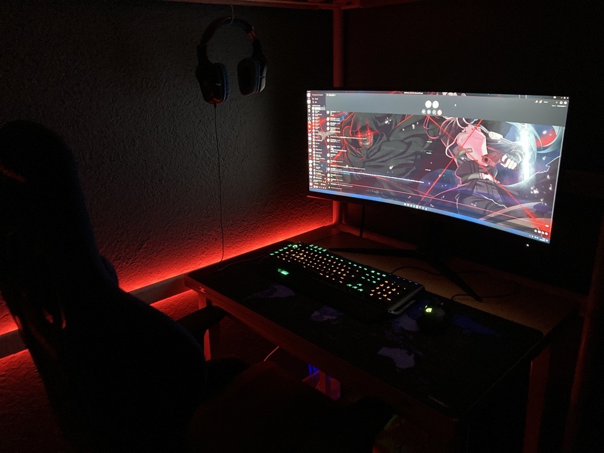

Das Gamen
In meiner Freizeit ist das Gamen in den vergangenen Jahren zu meinem grössten Hobby geworden, das ich mit meinen Freunden zusammen gerne immer mal wieder ausübe. Schon als ich klein war, hatte ich Kontakt mit der Welt der Videospiele. Jeden Montag war ich bei einem meiner damaligen Freunde zu Mittagessen und da dieser Freund nicht weit von der Schule entfernt wohnte, hatten wir immer die Möglichkeit, nach dem Mittagessen noch ein wenig auf seiner Xbox 360 zu spielen. Damals lernte ich mein erstes Spiel Minecraft kennen. Über die Jahre entwickelte sich mein Interesse immer mehr und mehr bis hin zum heutigen Datum, an dem ich einen eigenen Computer besitze.
